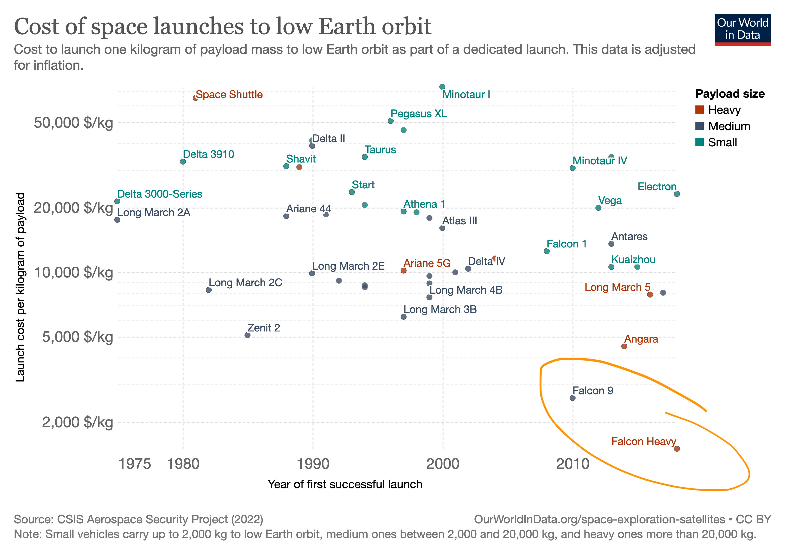

Ahhhhhh - When I hear Quick Wins
June 12, 2023
| to Quick Wins
Quick wins seem to be a common way of thinking in the tech industry. The fact that a transaction has occurred has become more important than whether the transaction yields a positive impact for the user or the business in the long run is not questioned. "The choice between what is right and what is easy" - Dumbledore.
Overnight successes are a myth; it generally takes a decade to achieve that. The whole "do the 20% that drives 80% of the results" doesn't really work out in the long run. Just like weight loss from a weeklong diet will not sustain and actually result in underlying damage. The majority of leaders and product managers find themselves in situations where they are standing on the shoulders of giants, i.e., working on mature products supported by a core business, which affords them the ability to pursue short-term wins without short-term consequences.
After hearing the phrase 'quick win' (and its variants) for the nth time, I dug into potential reasons behind this mindset. My hypothesis is that it essentially boils down to the incentive structure and lack of an ownership culture.
Output over outcome and timeline: We all care about our careers, and most companies use output as the scale to measure people, and generally do that at a quarterly or biannual timeline. This incentives people to deliver output on that scale. Rarely do we find leaders who reward effort towards a five-year target. Between the following two persons, who do you think is more likely to get promoted? Person 'A' working on the quick win that allows them to show an x% increase in a metric in the past quarter versus person 'B' stating they solved problem Z on a project that is in development and will be for at least three years. Working on long term projects is hard because one doesn't have the benefit of instant or regular gratification.
Goals and timelines: Goals and timelines are directly connected to the output vs outcome culture. One leader could set the goal to deliver a 10% increase every quarter to get to 100K subscribers, while the other could set the goal as delivering 50% growth by year end. The former team is likely to focus on upsells because realistically they won't be able to build and scale a feature in a quarter, the timeline they are being measure by, whereas the other team is more likely to build an amazing new feature simply because the timeline is different and there is less pressure to move that metric every three months.
Ownership: I had this "controversial" conversation with one of my managers a few years ago where I stated that people in the company are building shiny things (quick wins) and getting promoted and moving onto the next project, only to have their quick win crash and burn, but there was no penalty for that. Whereas people toiling away at the harder problems were not being rewarded until the result was delivered. If your project crashes and burns after you leave, there should be consequences. When a bridge collapses and the investigations lead to discovery of avoidable faults by contractor, there are held accountable. Maybe promotions should be measured as the average of the outcome you drive for the company over a longer time period rather than the metric you moved in the last quarter. This would mean if you built something that continues to deliver results over years they count towards your next promotion. Did you put the organisation on a diet or did you help it adopt a healthier exercise routine? Maybe this approach is too harsh, but irrespective of the approach, ownership is critical to ensure that we care about the impact of the transaction not just the fact that it occurred. AMG, the engine manufacturer, has a culture wherein the engineer who assembled the engine gets to sign their name on the engine, forever linking them to their work; AMG builds some of the highest quality engines in the world.
I love the example of the space industry to illustrate the difference between what is easy and what is right. For years, organizations tried to reduce the cost per kg to orbit through quick wins, and then came SpaceX, who took a significantly difficult approach, and the difference in the results is of an order of magnitude. (Falcon 9 and Falcon Heavy in graph below.)

Another company that doesn't seem to be a fan of quick wins is Apple.
Quick wins are not the same as iterative development. Nor are ideas that are essentially quick wins preceded by that term making them easy to spot. A diagnosis of the incentive structure and ownership culture is needed to spot these types of initiatives. Layoffs are a good example of quick wins; instead of streamlining the processes to increase efficiencies, some leaders decide to throw more people at the problem and then try to solve it by letting them go, generally making it worse.
There is something to be said about the realities of business and the need to make money in the near term, but if you find yourself in such hard situations often, it is time to look into whether quick wins are coming to bite you back.